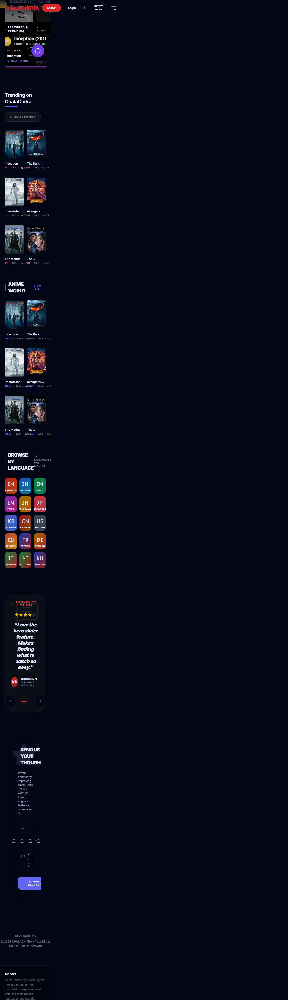
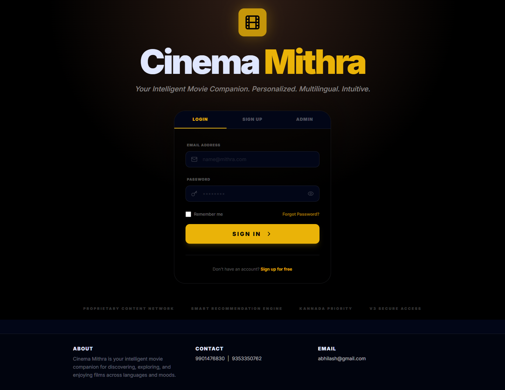
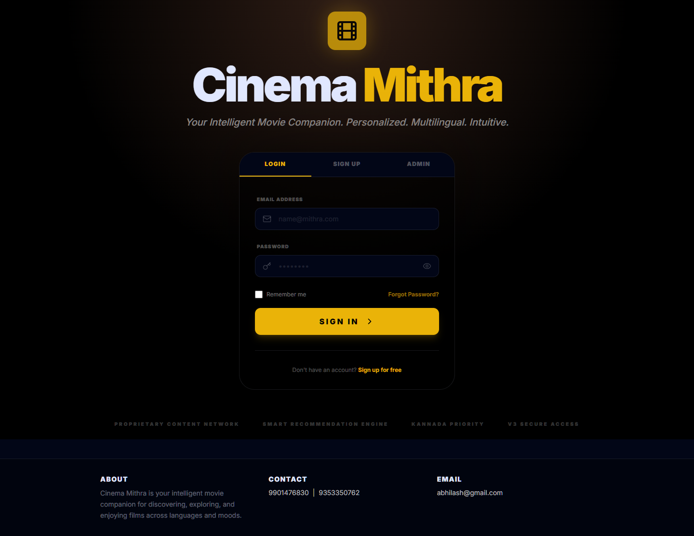
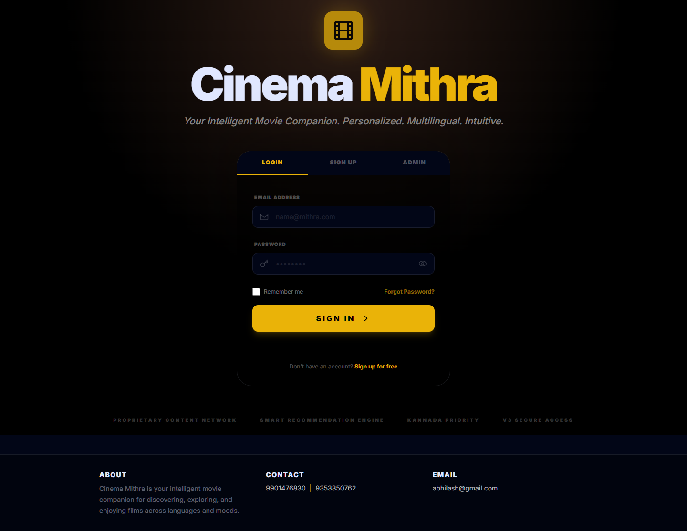

Complete Technical Documentation with Code Comments & Data Flow Diagrams
Version: 1.0.0
Date: May 2026
Tech Stack: React + TypeScript + Express + SQLite
Application Screenshots
These are real screenshots captured from the running ChalaChitra project. They show what the browser UI looks like for public, login, settings, and admin workflows.

Home page: The public discovery screen where users browse movies, series, anime, language collections, and recommendation sections.

Login page: The authentication screen used by normal users and admins before accessing protected features.

Settings page: The user settings area for account preferences, appearance, and configuration-related workflows.

Admin dashboard: The admin control area for API configuration, feature toggles, analytics, and project management settings.
1. Project Overview with Comments
This section explains the overall project structure and why certain architectural decisions were made. Understanding the architecture helps in debugging and extending the application.
1.1 Introduction
ChalaChitra is an intelligent movie discovery platform that combines modern web technologies with AI-powered recommendations.
The caching mechanism uses JavaScript's Map data structure (not localStorage) for in-memory storage, providing O(1) lookup time. Cache expires based on content type (trending: 10min, details: 24hrs).
2.2 React Component Structure
Components are organized by feature. Shared UI elements are in the components/ folder, pages are in pages/ folder.
// File: components/MovieCard.tsx (Example component structure)
// Location: Used in homepage, search results, recommendations
interface MovieCardProps {
movie: Movie; // Type from types.ts
onClick?: () => void; // Optional click handler
showRating?: boolean; // Conditional rendering flag
}
export const MovieCard: React.FC<MovieCardProps> = ({
movie,
onClick,
showRating = false
}) => {
// useState for local UI state (hover, expanded)
const [isHovered, setIsHovered] = useState(false);
// useEffect for side effects (analytics, lazy loading)
useEffect(() => {
// Intersection Observer for lazy loading
}, []);
return (
<div onClick={onClick}>
<img src={getImageUrl(movie.poster_path)} />
<h3>{movie.title}</h3>
{showRating && <Rating stars={movie.vote_average} />}
</div>
);
};
Pattern: Props interface defines the component's API. Optional props use ? syntax. Default values set in destructuring.
3. Frontend Code Functions with Data Flow
This section maps every major function to its location in the codebase and explains the data flow with visual diagrams.
Data Flow:
1. Check cache Map for existing data
2. If valid (not expired), return cached data
3. If expired/missing, make HTTP request
4. Store response in cache Map
5. Return data to caller
Backend is in the server/ folder. It uses Express with SQLite (sql.js) which runs in the same Node.js process - no separate database server needed.
4.1 Server Initialization
Location: server/server.cjs:1-50
const express = require('express');
const cors = require('cors');
const initDatabase = require('./db.js');
const app = express();
// CORS allows frontend at localhost:3001 to call backend at :3002
app.use(cors({ origin: 'http://localhost:3001' }));
// Parse JSON request bodies
app.use(express.json());
// Initialize SQLite database
const db = initDatabase();
// Mount API routes
app.use('/api', require('./routes.js'));
app.listen(3002, () => {
console.log('Backend running on http://localhost:3002');
});
CORS Configuration:
Without CORS, browser would block requests from localhost:3001 to localhost:3002 due to Same-Origin Policy. CORS middleware adds Access-Control-Allow-Origin header.
4.2 Database Initialization
Location: server/db.js:1-100
const Database = require('sql.js');
function initDatabase() {
// Try to load existing database from file
const dbPath = path.join(__dirname, 'cinema.db');
if (fs.existsSync(dbPath)) {
// Load existing database
const filebuffer = fs.readFileSync(dbPath);
db = new Database.Database(filebuffer);
} else {
// Create new database with schema
db = new Database.Database();
createSchema(db);
insertDefaultData(db);
}
// Auto-save on process exit
process.on('exit', () => saveDatabase(db, dbPath));
process.on('SIGINT', () => { saveDatabase(db, dbPath); process.exit(); });
return db;
}
sql.js stores the entire database in memory and writes to cinema.db on exit. This is why it's fast but has size limits (~2GB).
4.3 API Routes - Authentication
Location: server/routes.js:80-107
// POST /api/users/authenticate
router.post('/users/authenticate', (req, res) => {
const { email, password } = req.body;
// SQL JOIN to get user + preferences in one query
const user = db.prepare(`
SELECT u.id, u.username, u.email, u.role, u.tmdb_api_key,
up.genres, up.languages, up.moods, up.priority_language
FROM users u
LEFT JOIN user_preferences up ON u.id = up.user_id
WHERE u.email = ? AND u.password = ?
`).get(email, password);
if (user) {
// Parse JSON strings from database
res.json({
id: user.id,
username: user.username,
email: user.email,
role: user.role,
preferences: {
genres: JSON.parse(user.genres || '[]'),
languages: JSON.parse(user.languages || '[]'),
moods: JSON.parse(user.moods || '[]'),
priorityLanguage: u.priority_language
}
});
} else {
res.status(401).json({ error: 'Invalid credentials' });
}
});
SQL Injection Protection: Using parameterized queries (.get(email, password)) ensures user input is treated as data, not executable SQL. Never use string concatenation for SQL.
5. Database Schema with Explanations
SQLite schema uses foreign key relationships and JSON strings for flexible data storage. This hybrid approach (SQL + JSON) balances structure and flexibility.
Storage Strategy:
Arrays (genres, languages, moods) are stored as JSON strings in TEXT columns instead of separate junction tables. This reduces table count and simplifies queries at the cost of losing SQL indexing on array elements.
5.3 Table Creation with Comments
-- users: Core authentication table
-- Used by: Login page, Admin dashboard
CREATE TABLE users (
id TEXT PRIMARY KEY, -- UUID v4, generated in routes.js
username TEXT NOT NULL, -- Display name
email TEXT UNIQUE NOT NULL, -- Login identifier, must be unique
password TEXT NOT NULL, -- Plaintext (should use bcrypt!)
role TEXT DEFAULT 'USER', -- 'ADMIN' or 'USER'
tmdb_api_key TEXT, -- Optional per-user API key
created_at DATETIME DEFAULT CURRENT_TIMESTAMP
);
-- user_preferences: Separate table for flexible schema evolution
-- Used by: User profile page, recommendation engine
CREATE TABLE user_preferences (
user_id TEXT PRIMARY KEY,
genres TEXT DEFAULT '[]', -- JSON array: [28, 35, 18]
languages TEXT DEFAULT '["en","kn"]', -- JSON array: ["en", "hi", "kn"]
moods TEXT DEFAULT '[]', -- JSON array: ["happy", "romantic"]
priority_language TEXT, -- Preferred language code
FOREIGN KEY (user_id) REFERENCES users(id) ON DELETE CASCADE
);
-- watch_history: Many-to-many with metadata
-- Used by: Continue watching, history page
CREATE TABLE watch_history (
id INTEGER PRIMARY KEY AUTOINCREMENT,
user_id TEXT,
movie_id INTEGER, -- TMDB movie ID
movie_data TEXT, -- JSON snapshot (title, poster, etc)
rating INTEGER, -- User's rating 1-10
watched_at DATETIME DEFAULT CURRENT_TIMESTAMP,
FOREIGN KEY (user_id) REFERENCES users(id) ON DELETE CASCADE
);
-- ratings: Separate from history for quick lookup
-- Used by: Movie detail page (show if user rated this)
CREATE TABLE ratings (
id INTEGER PRIMARY KEY AUTOINCREMENT,
user_id TEXT,
movie_id INTEGER,
rating INTEGER, -- 1-10 scale
updated_at DATETIME DEFAULT CURRENT_TIMESTAMP,
UNIQUE(user_id, movie_id), -- One rating per user per movie
FOREIGN KEY (user_id) REFERENCES users(id) ON DELETE CASCADE
);
ON DELETE CASCADE: When a user is deleted, all their history, ratings, and preferences are automatically removed. Maintains referential integrity.
6. API Endpoints with Data Flow
All API endpoints are in server/routes.js. They follow REST conventions with JSON request/response bodies.
6.1 Complete Endpoint Map
Endpoint
Method
Input
Output
Used By
/settings/:key
GET
key (URL param)
{value: string}
Settings page
/settings
POST
{key, value}
{success: true}
Admin config
/users
GET
-
User[] with preferences
Admin dashboard
/users/register
POST
{username, email, password}
User object
Signup form
/users/authenticate
POST
{email, password}
User or 401
Login form
/history/:userId
GET
userId (URL param)
History[]
History page
/history
POST
{userId, movieId, movieData}
History entry
Movie play event
/ratings
POST
{userId, movieId, rating}
{success: true}
Star rating UI
/ratings/:userId/:movieId
GET
userId, movieId (URL)
{rating: number}
Movie detail page
6.2 TMDB API Integration
Location: services/tmdb.ts
TMDB API Key: add your own key in .env.local or Admin Dashboard Base URL: https://api.tmdb.org/3 Rate Limit: 40 requests per 10 seconds (free tier)
Caching: Time-based expiration using Map data structure Retry Logic: Exponential backoff (500ms × attempt) Deduplication: Promise in-flight tracking with Map Classification: Keyword matching + AI fallback Data Normalization: TMDB response → internal Movie type Error Handling: try/catch with localStorage fallback
8.3 Security Notes
Current security status and recommended improvements for production deployment.
✓ CORS configured - Only localhost:3001 can access API
✓ SQL Injection protected - Parameterized queries throughout
⚠ Passwords in plaintext - Should use bcrypt hashing
⚠ No JWT tokens - Session management needed
⚠ API key exposed - TMDB key visible in frontend (acceptable for read-only)